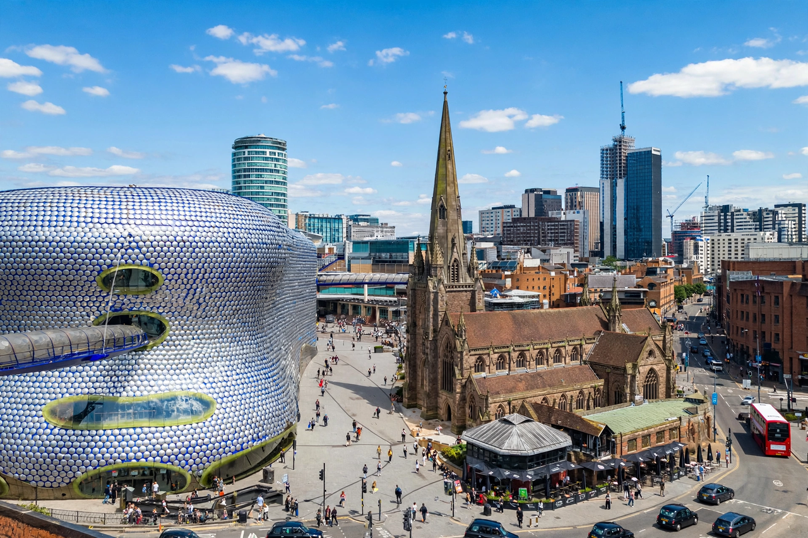

From Wikipedia, the free encyclopedia
| Birmingham | |
|---|---|
 Birmingham city centre | |
| Country | England |
| Region | West Midlands |
| Population | approx. 1.14 million (city); 2.9 million (metropolitan county) |
| Founded | 7th century (settlement); market charter 1166 |
| City status | 1889 |
| Nickname | "Second City", "Brum" |
Birmingham is a city and metropolitan borough in the West Midlands of England. It is the second-largest city in the United Kingdom, with a population of roughly 1.14 million within the city boundary and about 4.3 million in the wider metropolitan area. Historically part of Warwickshire, Birmingham grew from a small medieval market town into one of the great manufacturing centres of the Industrial Revolution.
Birmingham's rise began in the 18th century, when entrepreneurs and engineers such as Matthew Boulton, James Watt and William Murdock of the Lunar Society made it a hub of invention and metalworking. The town became famous for small, high-skill workshops producing guns, buttons, buckles, jewellery and machinery, earning the description "the workshop of the world" and "the city of a thousand trades". A dense network of canals — Birmingham is often said to have more miles of canal than Venice — carried coal, raw materials and finished goods.
In the Victorian era the civic gospel of Joseph Chamberlain brought municipal gas and water, slum clearance, the Council House and new cultural institutions. The city suffered heavy bombing in the Birmingham Blitz of the Second World War and was extensively rebuilt in the postwar decades, when its motor industry (centred on plants such as Longbridge and Castle Bromwich) powered continuing prosperity. The collapse of much of that manufacturing in the 1970s and 1980s caused severe unemployment, and the city reinvented itself around services, finance, conferences and higher education.
Birmingham sits on a plateau at the centre of the West Midlands conurbation, alongside Solihull, Wolverhampton and the Black Country towns. No major river flows through it; the small River Rea and River Tame drain the area. Today services account for the great majority of employment. Landmarks and institutions include the Bullring shopping centre, the Library of Birmingham (opened 2013), Symphony Hall and the City of Birmingham Symphony Orchestra, the Barber Institute of Fine Arts, and the Jewellery Quarter, which still produces a large share of British jewellery.
Birmingham is one of Britain's most ethnically diverse cities, with large South Asian, Afro-Caribbean, Irish and other communities, and no single ethnic group forming a majority. It is home to several universities, including the University of Birmingham (founded 1900), Aston University and Birmingham City University. In sport, the city hosts Aston Villa and Birmingham City football clubs and Edgbaston cricket ground. Birmingham hosted the 2022 Commonwealth Games.
New Street station is one of Britain's busiest rail interchanges; the city is also served by Birmingham Airport, the M5, M6 and M42 motorways, and an expanding tram system, the West Midlands Metro.